Your screen's light,
dancing in the menu bar.
Barbeat turns your Mac's menu bar and the edges of your screen into a light show. It moves with whatever your Mac is playing, and it takes its colors from what's on screen, right down to the stage lights in a concert video.
Free and open source · Apple Silicon (M1 or newer) · macOS 14.2 or later · Signed and notarized by Apple
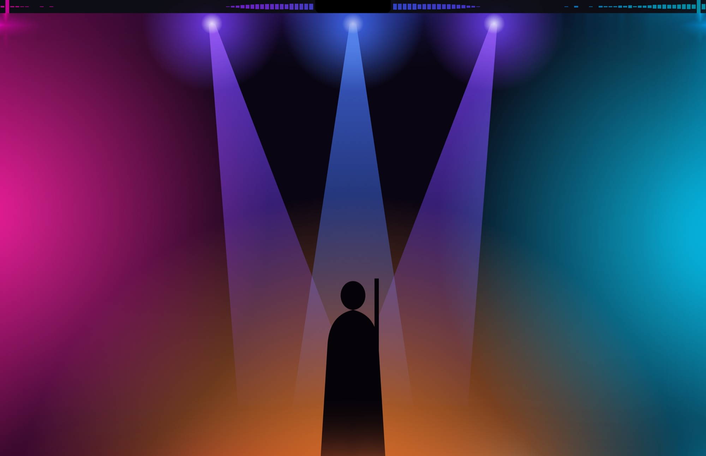
The light from your screen, spilling over.
Turn on Screen colors at the top of the panel and Barbeat watches what you're watching. The menu bar, the screen edges and your lights glow in the picture's own colors, spot by spot, as it changes. Turn it off and your own palette comes back.
Each spot matches the picture next to it
Every part of the menu bar and the edge glow takes the color of the screen right beside it, like backlighting behind a TV. A magenta spotlight on the left lights the left of the menu bar magenta; a cyan wash on the right turns the right side cyan.
The picture's strongest colors, as a palette
Barbeat picks the strongest colors on screen and paints the bars with them, fading smoothly as the picture changes. A good fit for styles that color by frequency.
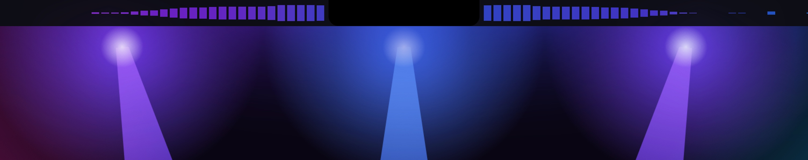
Follow light beams
When a laser fan, a sweeping stage beam or a strobe hits the picture, Barbeat sees it the moment it appears and pours that light's own color into the menu bar and the edge glow beside it. The glow lights up even while the music is quiet, then fades over half a second, so sweeping beams leave a trail.
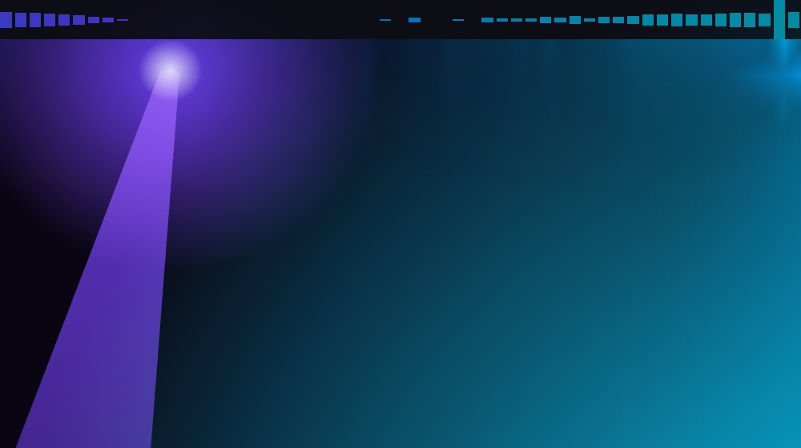
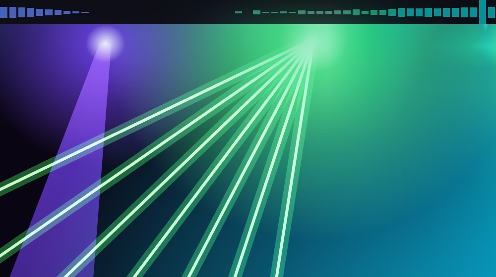
Barbeat only counts light that stands well above the rest of the picture and has just appeared or moved. Steady bright things, like a white window or captions, fade into the background within a few seconds. Strength sets how much of the glow a beam takes over. In Main colors, beams tint the brightest colors instead.
Your lights too
With Flash your lights too on, a beam on screen also lights up your Hue and WLED lights in its own color, the ones on the same side of the room as the beam on screen. A laser sweeping left to right across a concert video sweeps across your room the same way, even in a quiet moment. Like every flash, it's capped at three a second per light.
Screen colors need Screen Recording permission, and macOS shows its recording icon in the menu bar while they're on. Copy-protected video (some streaming apps) looks black to every app, so Barbeat keeps the last colors until the picture comes back.
Up and running in a minute
- Download and install.
Get
Barbeat-<version>.zipfrom the download page, unzip it and drag Barbeat into your Applications folder. - Open it.
macOS checks that you want to open an app from the internet: click Open. A small four-bar icon appears in the menu bar (Barbeat has no Dock icon), and a welcome window shows what it can do.
- Allow system audio.
macOS asks to let Barbeat record system audio: click Allow. Barbeat only listens so it can animate; nothing is recorded or saved.
- Turn on Screen colors.
Click Turn On Screen Colors in the welcome window (or flip its switch at the top of the panel). Barbeat explains what it reads, then macOS asks to let it record the screen: allow it, and if macOS offers Quit & Reopen, click it.
- Play some music.
Barbeat starts with stereo Center bars and a deep glow around the screen. Click the four-bar icon for quick controls, or Settings… for everything else. Changes apply instantly and are remembered.
Ten ways to see the music
Pick a style in the panel or under Settings › Look. In Stereo layout the left channel plays left of the notch and the right channel to the right, with the bass hugging the notch. These pictures show the right half, starting at the notch. On ultrawide screens, like a 32:9 monitor, Barbeat draws extra bars in between so they keep a normal width instead of stretching.
LED
Segmented bars, like a hardware equalizer.
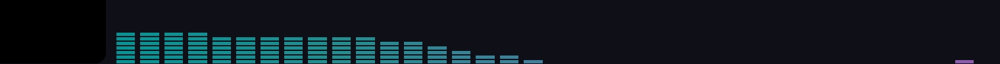
Bars
Solid bars.
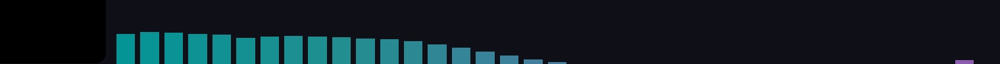
Center
Bars that grow from the middle. The default.
Glow
A soft color wash that lights up with each frequency.
Pulse
The whole menu bar's color pulses with the beat.
VU
A stereo level meter shooting out of the notch.
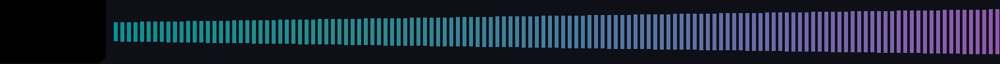
Aura
Light hugging the notch that flares with the bass.
Waterfall
The last few seconds of music flowing out across the menu bar.
Scope
A live waveform, like an oscilloscope.
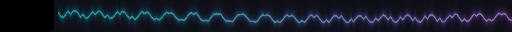
Sparks
Sparks shoot out of the notch on every beat.
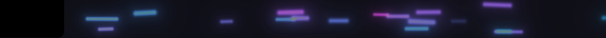
The panel and Settings
Click the four-bar icon in the menu bar for quick controls: the on/off switch, Screen colors, scenes, style, colors, brightness, Lights and Voice. Settings… opens a window with everything else, one page per topic.
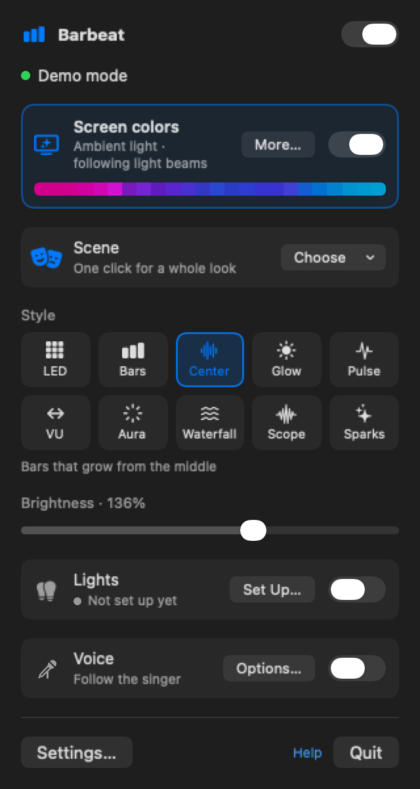
Screen colors
- Ambient light or Main colors, Follow light beams
- Everything about Screen colors, on its own page: the two ways it colors things, light beams with their Strength, whether beams flash your lights, and what Barbeat is watching right now.
Look
- Style, Layout, Bars
- The ten styles, each with a picture. Stereo L | R splits left and right around the notch; Full width spreads both channels across the whole bar. Bands sets how many bars (16 to 128). Peak hold adds little caps at each bar's latest peak.
- Colors
- Used whenever Screen colors is off: Classic, Spectrum, Neon, Fire, Ice, White, Accent (your Mac's accent color), Wallpaper (picked from your desktop picture) and Custom. Customize These Colors copies any palette into Custom, where you set four colors, by frequency or by bar height, with Shuffle, colors from your wallpaper and four preset slots. Color drift slowly turns them around the color wheel.
Sound
- Listen to
- System is everything your Mac plays. One App listens to a single app, say Spotify or Safari, so calls and alerts don't move the bars. Input uses a microphone or audio interface; macOS asks for microphone access the first time. If that input is unplugged, Barbeat listens to system audio until it's back.
- Sensitivity, Auto level, Low · Mid · High
- Auto level adjusts to how loud the music is, so the bars always fill the menu bar; Sensitivity makes everything react more or less on top of that. Low, mid and high boost or calm the bass, mids or treble. Reset Tuning puts them back.
Glow and screens
- Brightness, Opacity, Keep menu bar text readable
- How strong the colors are and how see-through the bars are. Keeping the text readable tones down colors bright enough to wash out the menu bar's own text and icons; the edge glow keeps its full colors.
- Screen edge glow
- A soft glow around the edges of the screen. Depth sets how far it reaches in (up to a third of the screen). Top edge too adds the top, just below the menu bar.
- Where it shows
- All displays or just the main one, and over full-screen apps: the edge glow on all four sides, plus the bars too if you turn on Menu bar visuals too (they step aside whenever you use the menu bar).
General
- Starting up, updates
- Open Barbeat when you log in, let the menu bar icon move with the music, and check for updates automatically (about once a day, on GitHub). When there's a new version, Barbeat asks first, then installs it and restarts by itself.
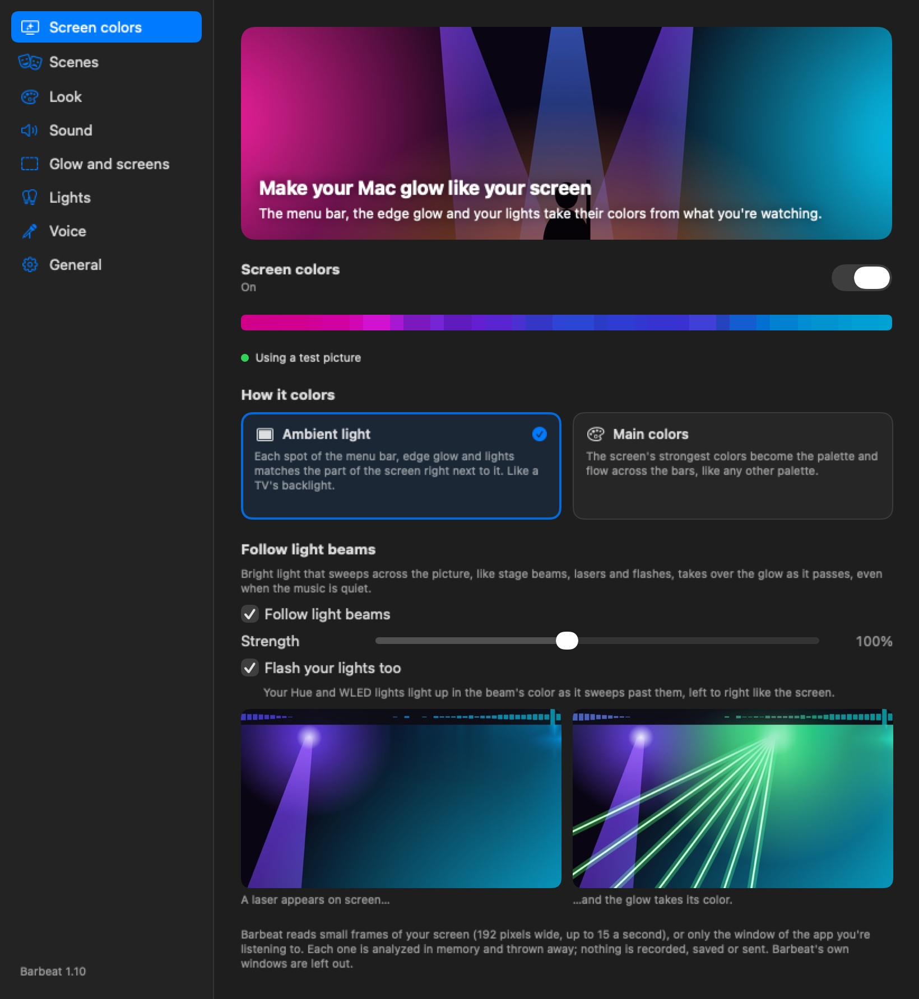
One click for a whole look
A scene saves everything at once: the style, colors, Screen colors, glow, lights and voice. Pick one from the Scene menu in the panel, or let Barbeat switch on its own.
Concert, Chill, Focus and On a call
Concert is Center bars in Screen colors with light beams and bright lights. Chill is a slow, soft glow. Focus is thin, quiet bars with the lights off. On a call goes dark until the call ends. Change them, delete them, or save your own with Save Current Look.
Switches when an app plays, or you're on a call
Give a scene a trigger: while one of these apps plays (Concert while Safari plays a show, Chill for Apple Music) or while you're on a call (any app using a microphone). When the trigger ends, everything goes back to how it was. Pick another scene meanwhile and yours wins until the trigger ends.
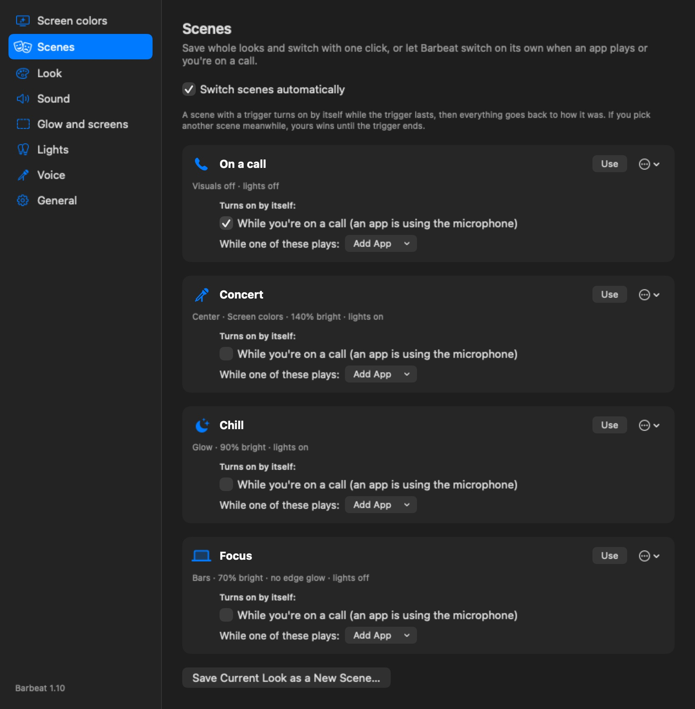
Barbeat waits a few seconds before switching, so a notification sound doesn't change the scene, and a little longer before switching back, so it doesn't flip between songs.
Colors that follow the singer
Turn on Voice in the panel and Barbeat listens for singing, speech or both. While someone sings, the voice color spreads out from the middle of the screen, further with louder singing, and the rest keeps the music's colors.
- Voice color or Pitch color
- A color of your choice (warm gold to start), or one that follows the singer's notes: blue for low notes, through green and yellow, to orange for high ones. Strength sets how far it can spread.
- Voice glow
- A soft glow that swells out of the notch (or the middle) with each word, behind the bars.
- Show on
- The menu bar, the edge glow and your lights, each on or off. Each light device also has its own Voice option: lights that follow the singer, or white sparkles on words.
Barbeat finds voices with Apple's sound recognizer, built into macOS, plus its own check for a single pitched voice in the middle of the mix, where most singers are. Instrumental parts stay quiet. It all runs on your Mac and uses about 1% of one processor core.
Take the show into the room
Barbeat can drive Philips Hue lights and Art-Net devices, like WLED LED strips and DMX fixtures, in the same colors as the menu bar, including Screen colors. Lights have their own switch, so Barbeat also works as a lights-only controller.
Philips Hue
- In the Hue app, make an Entertainment area with the lights you want.
- In Barbeat's panel, click Set Up… next to Lights (it opens Settings › Lights), then Add Hue Bridge.
- Pick your bridge (or type its IP address), click Pair and press the round button on top of the bridge.
- Choose the Entertainment area. Identify blinks its lights one by one.
WLED and Art-Net
- Click Add Art-Net Device.
- Find Nodes lists devices on your network, or add one by IP address.
- For a WLED strip, Detect WLED fills in its name, LED count and settings.
- Choose what happens When Barbeat stops: hand back to WLED's own effect, fade to black, or hold the last color.
- Mode
- Auto picks for each device: Pulse for one light, Stereo for two, Bands for three to nine (a room-sized equalizer, bass on the left), and Mirror for strips, which copy the menu bar at the same spot.
- Base glow, Beat flash, Brightness, Delay
- How much the lights glow between beats, how hard they flash, how bright they get, and a delay for AirPlay or Bluetooth speakers that play late.
- Mirror, sparkles and voice, for each device
- Mirror makes the two halves match, with the bass in the middle or at both ends. White sparkles on the beat flash a few random lights white on every beat, up to Max sparkles at once, fading over Fade. Voice makes the lights follow the singer, or sparkle on words.
- Light beams
- With Screen colors on, beams and lasers on screen flash the lights on the same side of the room, in their own color (Your lights too).
- Sleep timer
- For falling asleep to music: after 15, 30, 60 or 90 minutes the lights fade out over a minute and stay off, even if the music ends first. Set it on the Lights page or with the moon button in the panel.
- Each device's switch
- Every Hue Bridge and Art-Net device has its own on/off switch on the Lights page. Switch one off to leave those lights alone for now (Hue lights go back to how they were) while the others keep playing. It stays set up for next time.
- Give back after
- When the music stops (10 s, 30 s, 2 min or never), when you turn Lights or a device off, quit or the Mac sleeps, Hue lights go back to exactly how they were before: on or off, brightness, color and scene.
Lights never flash more than three times a second. With Reduce motion turned on in macOS, flashes are halved. The first time, macOS asks for Local Network permission.
Control it from anywhere
Barbeat understands barbeat:// links, so the Shortcuts app ("Open URL"), a Stream Deck, Raycast, Alfred or a bookmark can switch it:
barbeat://on·barbeat://off·barbeat://toggle- The whole show on or off.
barbeat://scene/Concert- Switch to a scene by name.
barbeat://style/center- Pick a style.
barbeat://screen-colors/on·barbeat://lights/off·barbeat://voice/toggle- Screen colors, Lights or Voice on, off or toggled.
barbeat://sleep/30·barbeat://sleep/off- Start the lights' sleep timer (minutes), or cancel it.
barbeat://settings/lights- Open Settings at a page: screen, scenes, look, sound, glow, lights, voice or general.
If something's off
Where did the settings go?
Since version 1.11 the panel has quick controls only. Click Settings… at the bottom of the panel for everything else, including Lights and Voice. Screen colors is now its own switch at the top of the panel instead of a palette.
The look changed by itself
A scene with a trigger switched on, for example On a call while an app used the microphone. The Scene row in the panel says why. Turn off Switch scenes automatically under Settings › Scenes, or remove the trigger from that scene.
The bars don't move
Open System Settings › Privacy & Security › Screen & System Audio Recording and make sure Barbeat is turned on. Then click Try Again in Barbeat's panel. If you chose One App, check that the app is actually playing sound.
Screen colors stay gray or say "needs permission"
Allow Barbeat under Privacy & Security › Screen & System Audio Recording (in the screen recording list), then click Try Again. macOS sometimes needs Barbeat to reopen before the permission takes effect.
The colors freeze while I watch a streaming service
Copy-protected video looks black to every app that reads the screen, so Barbeat keeps the last colors and picks up again as soon as the picture can be read. The music still moves the bars as usual.
The menu bar is hard to read
Turn on Keep menu bar text readable. You can also lower Opacity or Brightness, or try a calmer style like Glow or Pulse.
Nothing shows in the menu bar when an app is in full screen
By default full screen shows just the edge glow. Turn on Menu bar visuals too under Show over full-screen apps to also see the bars at the top.
The panel says "No visible menu bar"
Your menu bar is set to hide automatically, so there's nothing to draw behind. Change "Automatically hide and show the menu bar" in System Settings. The edge glow keeps working either way.
Does it use much battery?
The drawing runs on the graphics chip. On battery Barbeat draws at 30 frames a second instead of 60, and it stops drawing whenever it's silent. To save more, turn off Screen edge glow or Follow light beams, or flip the switch at the top of the panel.
My Bluetooth headset sounds worse
Listening to a Bluetooth headset's microphone switches it into call mode, which lowers the sound quality. Choose System or One App under Listen to instead.
How do I uninstall it?
Click Quit at the bottom of the panel and drag Barbeat from Applications to the Trash. Any Hue lights it was using are put back first.
To also remove its settings, run defaults delete com.ia.MenuBarEQ in Terminal. Hue pairing keys are in your keychain under com.ia.MenuBarEQ.hue.
Still stuck, or found a bug? Open an issue on GitHub.
Nothing leaves your Mac
Barbeat doesn't collect anything: no accounts, no analytics, no ads. Sound and screen frames are analyzed live in memory and never recorded, saved or sent. The only network traffic is to lights you set up yourself on your own network, and a once-a-day check for a newer version on GitHub, which you can turn off. Voices are found on your Mac with Apple's built-in sound recognizer. Read the full privacy policy.
Enjoying Barbeat? ♥
Barbeat is free and open source, made by one person. If it makes your music a little brighter, you can help keep it going.
Telling a friend who loves music helps too.